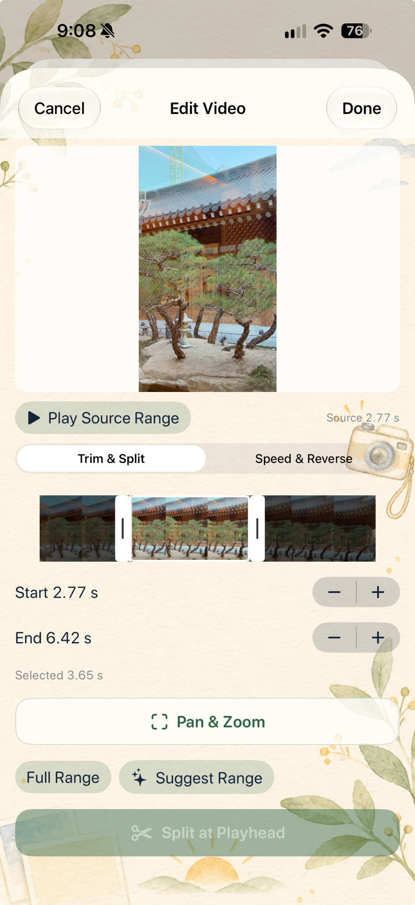
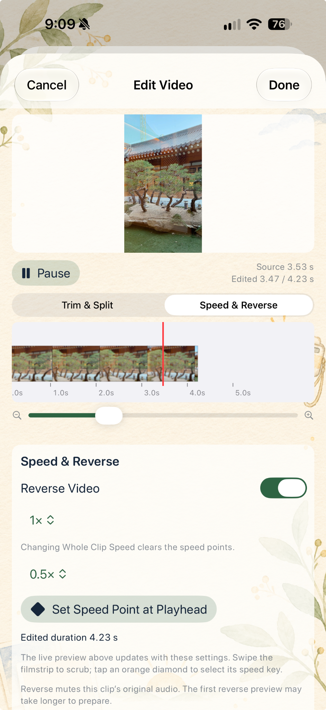

Choose your moments
Pick photos and videos from Photos in the order you want them. Your montage starts with your choices.
YOUR EVERYDAY MOMENTS, REIMAGINED
Bring your photos and videos together in a montage that feels like you. Shape the timing, move the frame, and make every little moment count.
For iPhone · One-time purchase · No ads
Price to be announced.

A little time with your favourite moments.
Pick photos and videos from Photos in the order you want them. Your montage starts with your choices.
Trim and split clips, drag thumbnails to rearrange them, and shape the pacing with speed and motion controls.
Export your montage as an MP4, then choose where to save or share it using the system share sheet.

A LITTLE MORE CONTROL
KEEP CREATING
Find help with editing, saved projects, and exporting.